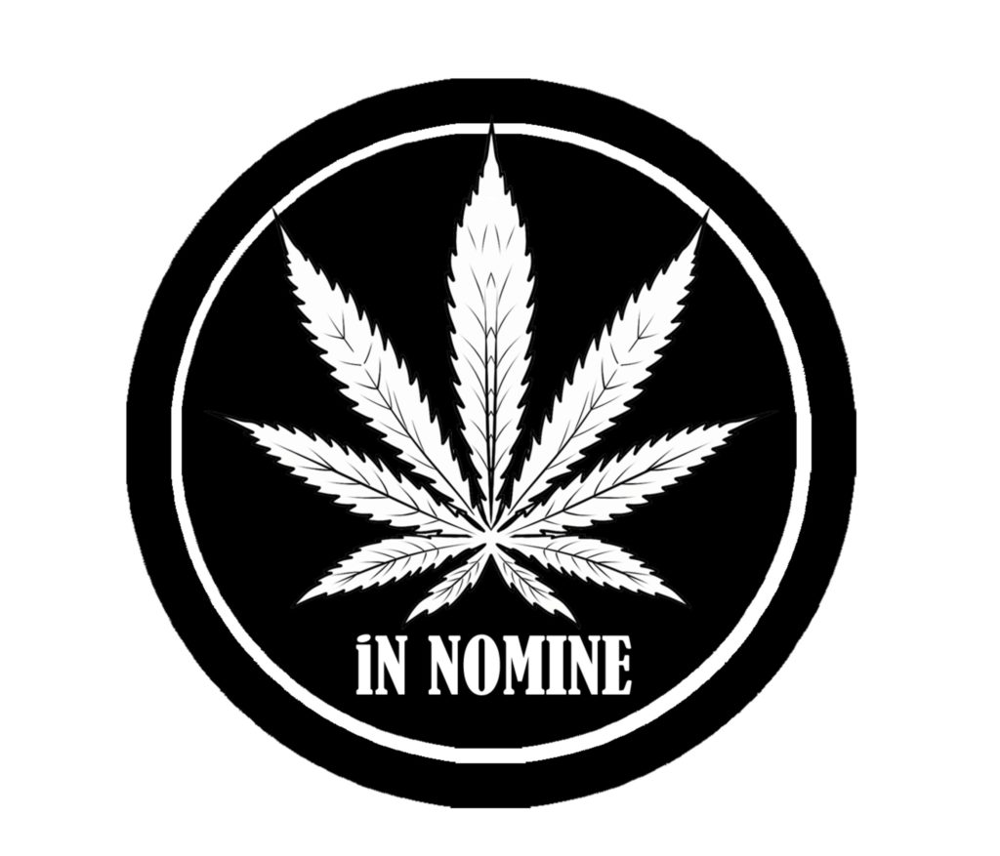

CANNAINSIDER NEWS · 24. 7. 2026 · SAMUEL BECKETT DNES · REPORT 24072026-006
Konopná církev nechce zázrak. Chce rozhodnutí
Ministerstvo kultury potvrdilo, že se podáním zabývá, a přislíbilo sdělit zjištění a další postup do 31. srpna 2026.
8/9VYSOKÁ PROCESNÍ RELEVANCE